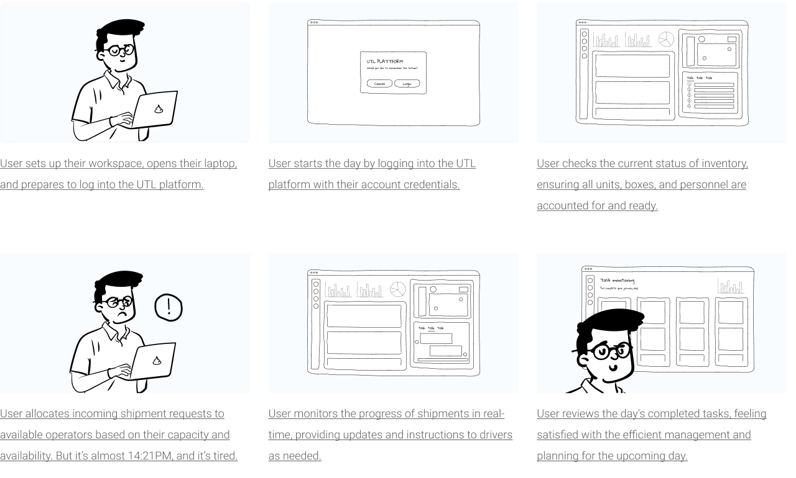
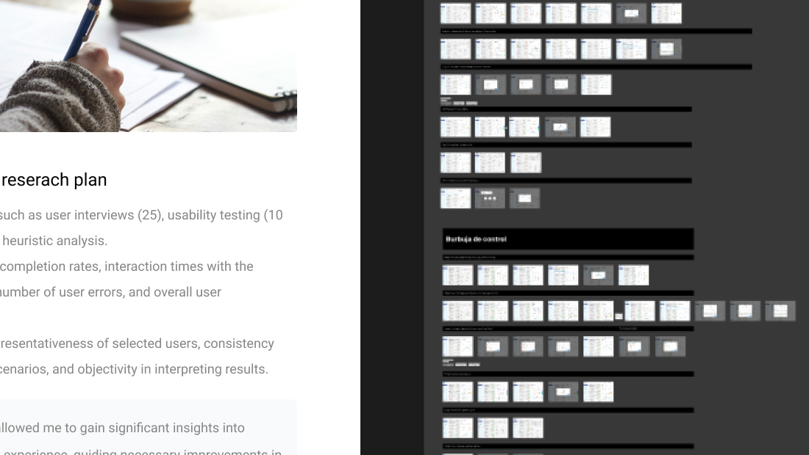
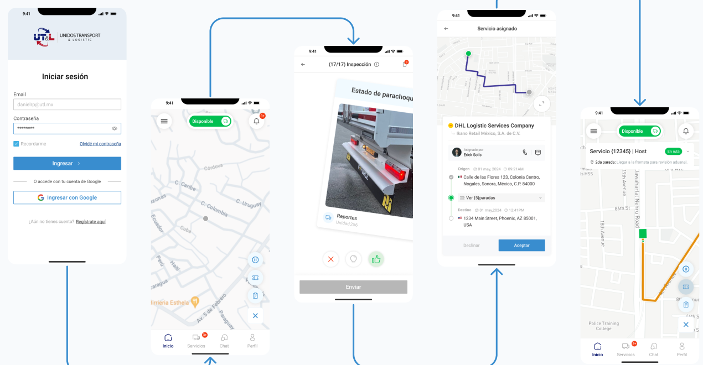

SaaS platform and complementary app for freight delivery in Mexico and the United States.
Year
2023
Timeline
~1 year · design thinking
Scope
Research, IA, SaaS, driver app, testing
Tools
Figma, Maze, Adobe CC
Categories
Logistics, SaaS, B2B
00 / 06 · Summary
00 · Executive summary~1 year
A SaaS platform and a driver app for UTL, a freight company operating between Mexico and the United States, to connect orders, tracking, and communication in one place.
300
Desktop screens designed
120+
Mobile screens designed
25+
Refinement sessions with the dev team
90%
Found the platform easy to use
Problem
Order, purchase, tracking, and monitoring systems weren't integrated, causing delays, poor visibility, and hard coordination with drivers.
Approach
Desktop first for administrators, then a simpler mobile app for drivers, tested with both groups.
Outcome
One system where admins assign and track freight in real time, and drivers inspect, report, and chat from the road.
Desktop first, then mobile
Prioritize: key features for admins (desktop) and drivers (mobile).
Adapt: detailed on desktop, intuitive on mobile.
Build: advanced features on desktop, essential and quick on mobile.
Test continuously to tune both platforms.
Who the system connectsFig. A
Step 01 / 05Planning
01
Empathize
GoalUnderstand freight logistics deeply before designing for it.
Findings by method
Documental research→The stages of a logistics process, and the parts of a trailer unit: chassis, body, brakes.
Benchmarking→Freight trackers share order management, units and crates, live tracking, and customs.
Interviews→Many processes rely on checklists and signed documents for accuracy and accountability.
It is crucial to have information such as cargo details, origin and destination points, delivery dates, and any customs or necessary documentation requirements.
Erick Solís · UTL CEO
Tracking is essential to ensure real-time visibility of shipment status and location throughout the logistics process.
Alarich Mahl · UTL Developer
Step 02 / 05Let's start
02
Define
GoalTwo audiences, two needs: coordinators who plan, and drivers who execute.
HG
Hector García, 35Logistics coordinator
Pain
Paper documents, manual entry, no real-time visibility.
GM
Giovanna Martínez, 28Fleet manager
Pain
Manual maintenance tracking; little vehicle diagnostics.
MS
Miguel Sierra, 45Truck driver
Pain
Small text is hard to read; prefers traditional methods.
GA
Guillermo Apodaca, 48Truck driver
Pain
Hard to inspect and report issues to dispatch.
User journey · a coordinator's day
Stage
Login
Review units, boxes, staff
Assign shipments
Monitor & communicate
Close the journey
Emotion
Relax
Stressed
Pressure
Satisfaction
Relief
Pain point
Forgotten passwords; security
No inventory visibility; inconsistent records
Manual allocation; poor communication
No live progress; slow client updates
Manual records; availability issues
Opportunity
Simple recovery and 2FA
Real-time inventory and resource planning
Automated allocation and notifications
GPS tracking and instant chat
Automated closing and digital records

Storyboard · a coordinator's dayFig. B
Step 03 / 05Co-creation
03
Ideate
GoalAn architecture for 300 screens, and features shared across desktop and mobile.
Admins assign seals; drivers scan and verify them.
BOTH
Support
Help and documents about the UTL process.
Step 04 / 05Concept to reality
04
Prototype
GoalA design system and hi-fi screens, validated with the dev team as they were built.
What we did
Design system: CTAs, pill and segmented buttons, inputs, controls, and avatars.
Research plan: 25 user interviews, 10 usability tests, and a heuristic analysis.
Measured task completion, interaction times, errors, and satisfaction.
25+ online sessions with developers to validate scope and feasibility.

Design systemFig. D
Step 05 / 05Pre-launch
05
Testing
GoalValidate both platforms with 25 admins, drivers, and route managers.
Desktop prototypeFig. E
TASKS
80%
Completed freight tasks without help.
CONTACT
−60%
Time to contact drivers and clients.
SATISFACTION
85
Out of 100, average score.
CLARITY
+70%
Easier to read unit, box, and operator status.
Mobile prototype · driversFig. F
TRACKING
95%
Ease of use with real-time tracking.
CHAT
−80%
Time spent contacting customers.
INSPECTIONS
+70%
Inspection report accuracy.
SEALS
+60%
Efficiency in seal management.
Key challengeDrivers were 35–55 and not very tech-savvy, so the happy path needed larger text, high contrast, big tap targets, and only the essential information.

Driver app · happy pathFig. G
06 · ResultsPlatform + app
06
Freight, visible end to end
Outcome90% found the platform easy to use, a sign the user-centric design worked for both audiences.
01
Harmonize featuresChat and inspections had to fit drivers' work without interrupting it.
02
Simple, not incompletePrioritize so no critical details are left out.
03
Accessible by defaultLarge text, contrast, and tap targets for every driver.
04
Talk to dev often25+ sessions kept scope realistic.